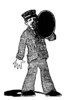

INTRODUCTION
前 言
This book is for the child who:
thinks heaven is in the sky and
hell is under the ground;
has never heard of London or Paris and
thinks a Dane is a kind of dog.
It is to give a traveler’s view of the World—but not a commercial traveler’s view.
It is to show the child what is beyond the horizon, from “Kalamazoo to Timbuktu.”
It is to show him not only “the Seven Wonders of the World” but the seventy times Seven Wonders of the World.
When-I-was-a-boy in New England we had for Thanksgiving six kinds of pie: apple, peach, cranberry, custard, mince, and pumpkin, but I was allowed to have only two kinds and I never could make a satisfactory choice. I have had the same difficulty in selecting geographical places and subjects to tell about. There are too many “most important” places in the World to be included in this first survey, and there will inevitably be those readers who will wonder why certain countries and certain places have been omitted, especially the place where the reader may live.
To me, as a child, geography was a bugbear of repellent names—Climate and Commerce, Manufactures and Industries, and products ,PRODUCTS , PRODUCTS. It seemed that the chief products of every place in the World were corn, wheat, barley, rye; or rye, barley, wheat, corn; or barley, corn, rye, wheat. In my geography modern Greece had but a paragraph—because, I suppose, it did not produce wheat, corn, barley, rye. Geography was a “stomach” geography; the “head” and “heart” were left out.
I loved the geography pictures and maps but hated the text. Except for an occasional descriptive or narrative paragraph the text was wholly unreadable—a confused jumble of headings and sub-headings and sub-sub-headings: HOME WORK , NOTES , MAP STUDIES , Suggestions to Teachers, Helps, Directions, Questions, REVIEWS, PROBLEMS , Exercises, Recitations, LESSONS, PICTURE STUDIES , etc., etc., etc.
The World was an orange when I went to school, and there were only three things I can remember that I ever learned “for sure”—that the Dutch children wore wooden shoes, the Eskimos lived in snow houses, and the Chinese ate with chopsticks.
We had a question and answer catechism which we learned as we did the multiplication tables. The teacher read from her book:
Q. “What is the condition of the people of the United States?” and a thirteen-year-old boy in the next seat answered glibly: A. “They are poor and ignorant and live in miserable huts.” At which astounding statement the teacher unemotionally remarked, “No, that’s the answer to the next question, ‘What is the condition of the Eskimos?’”
When my turn came to teach geography to beginners nine years of age, I found the available textbooks either too commercial and industrial, on the one hand, or too puerile and inconsequential, on the other. Statistics and abstractions were entirely beyond the ken of the child of nine, and random stories of children in other countries had little value as geography.
As I had been a traveler for many years, had visited most of the countries of the Globe, and in actual mileage had been five times the distance around the World, I thought I would write a geography myself. Vain conceit! A class would listen with considerable attention to my extemporaneous travel talks, so I had a stenographer take down these talks verbatim. But when I read these notes of the same talk to another class, then it was that I discovered a book may be good—until it is written. So I’ve had to try, try again and again, for children’s reactions can never be forecast. Neither can one tell without trial what children will or will not understand. Preconceived notions of what words they should or should not know are worthless: “Stupendous and appalling” presented no difficulties whatever but much simpler words were misunderstood.
I had been reading to a class from an excellent travel book for children. The author said, “We arrived, tired and hungry, and found quarters in the nearest hotel.” The children understood “found quarters” to mean that the travelers had picked up 25-cent pieces in the hotel! Then again I had been describing the “Bridge of Sighs,” in Venice, and picturing the condemned prisoners who crossed it. Casually I asked if any one could tell me why it was called the “Bridge of Sighs”. One boy said, “Because it is of big size .” A little girl, scorning his ignorance, said, “Because it has sides .” A boy from the country, with a far-fetched imagination, suggested it might be because they used “scythes”; and a fourth child said, “Because it belonged to a man named ‘Cy.’”
The study of maps is interesting to almost all children. A map is like a puzzle picture—but new names are hard. And yet geography without either name or place is not geography at all. It is only fairyland. The study of maps and names is therefore absolutely essential and large wall maps most desirable.
Geography lends itself admirably to research on the part of the child. A large scrap-book arranged by countries may easily be filled with current pictorial news, clippings from magazines and Sunday newspapers, and from the circulars of travel bureaus. There is a wealth of such scrap-book material almost constantly being published—pictures of temples in India, pagodas in China, wild animal hunts in Africa, parks in Paris—from which the child can compile his own Geographic Magazine. Furthermore, the collection of stamps offers a most attractive field, particularly for the boy just reaching the age when such collections are as absorbing as an adult hobby.
Of course, the best way to learn geography is by travel but not like that of the business man who landed in Rome with one hour to see the city. Jumping into a taxi and referring to a slip of paper, he said: “There are only two things I want to see here—St. Peter’s and the Colosseum. Drive to them as fast as you can and back to the station.” He was accordingly driven to St. Peter’s. Sticking his head out of the window he said to the driver, “Well, which is this?”
In the little town where I was born, there lived an old, old man whose chief claim to distinction was the fact that he had never in his whole life been ten miles away from home. Nowadays travel is so easy that every child may look forward to traveling some day. This book is to give him some inkling of what there is to see, so that his travel may not be as meaningless as that of the simple sailor who goes round the world and returns with nothing but a parrot and a string of glass beads.
“ALL ABOARD !”
WHEN -I-WAS-A-BOY , my nurse used to take me to the railroad station to see the trains. A man in a blue cap and blue suit with brass buttons would call, “All aboard for Baltimore, Philadelphia, New York, and points north and east!” and wave his arm for the train to start. My nurse said he was a conductor.
So when I went home I used to put on a cap and play conductor shouting, “All aboard for Baltimore, Philadelphia, New York, and points north and east!” over and over, again and again, until I was told, “For pity sake, stop it!”
But some day I hoped, when I grew up, to be a real conductor in a blue cap and a blue suit with brass buttons. And now that I am grown up, I am still playing conductor, for in this book I am going to take you to Baltimore, Philadelphia, New York, and points north, east, south and west—round the World!

这本书是写给这样的孩子：他认为天堂在天上，地狱在地下；他从未听说过伦敦或巴黎，他认为丹麦人是一种狗
[1]
。
这本书将呈现一个旅行者眼中的世界——但不是一个旅行推销员眼中的世界。
这本书将告诉孩子，在地平线以外有什么地方：从“卡拉马祖到廷巴克图”。
这本书不但给孩子讲“世界七大奇观”的故事，还要给他讲七十倍于世界七大奇观的故事。
我小时候在新英格兰过感恩节，有六种果馅派：苹果派、桃子派、越橘派、蛋奶派、百果派和南瓜派。但只准我从中选两种，而我从未能做出让自己满意的选择。在选择要讲述哪些地理上地点和主题时我也遇到了同样的困难。在这第一本世界地理概述中，世界上有太多的“最重要”的地方要提到，而不可避免的是，有些读者会奇怪为什么某些国家和某些地方被忽略了，尤其是读者本人生活的地方。
小的时候，我觉得地理是个令人头痛的学科，有着那么多令人厌恶的名字——气候和商业、各种制造业和行业以及产品、产品，还是产品！似乎世界 各地的农产品都是玉米、小麦、大麦、黑麦；或者是黑麦、大麦、小麦、玉米；或是大麦、玉米、黑麦、小麦。在我读的地理课本里，现代希腊部分只有一个段落的叙述——我想，就是因为希腊不产小麦、玉米、大麦、黑麦吧。地理只关心“吃的”的学科，却忽视了“思想”和“感情”。
我爱看地理书上的图片和地图，却讨厌读上面的文字。除了偶尔出现的一段描写或叙述还能吸引人之外，地理书中的文字统统让人读不下去——一大堆杂乱无章的大标题、小标题以及小标题下的小标题：家庭作业、注释、地图练习题、给老师的建议、辅导、指导、问题、复习、疑难、练习、背诵、课程、图片习题，等等。
我上学的时候，世界对我来说就像一个橙子，我记得只有三个细节我学得非常“牢固”：荷兰孩子穿着木靴，爱斯基摩人住在雪屋里，中国人吃饭用筷子。
那时我们用的是一套问答形式的教科书，我们像学习乘法表一样机械地学习这本书。老师捧着书本照着念：
问：“美国人的状况是什么样的？”旁边座位上一个13岁的男孩流利地回答：“他们贫穷、愚昧，住在可怜的小屋中。”对这样错得离谱的回答，老师无动于衷地说：“错。这是下一题的答案，‘爱斯基摩人的状况是怎样的？’”
轮到我给初学地理的9岁的孩子上地理课时，我发现手边的教科书要么过多地涉及商业和工业，要么就是太幼稚，没有条理。数据和抽象的概念完全超出了9岁孩子的理解能力，而随意选取的讲述其他国家孩子的故事作为地理知识没有什么用处。
我有过多年旅行的经历，到过世界上大多数的国家，走过的路加起来可以绕地球五圈，那么，我想我自己可以写一本地理书。是不是自负又自大的想法？！我把我的旅行见闻即兴讲述给一个班的学生听，学生们总是很专注地听着，于是我请一个速记员逐字把这些讲课全记下来。但是当我把同样的内容按照记录读给另一个班级时，我发现把讲稿写成书也许会有用。于是我必须不断尝试，因为孩子有什么反应是无法预测的。不经过试讲就无法知道什么是孩子理解的，什么是孩子不理解的。对他们懂或不懂什么词汇的先入之见都是没有用的，“令人惊叹的”和“令人震惊的”这样的大词他们理解起来没有任何困难，而那些简单得多的小词却让他们产生误解。
我在课堂上向学生读过一本写给孩子看的游记。作者写道：“我们到了，又累又饿，就在最近的旅馆住了下来。”孩子们把“住了下来”理解成了旅行者在旅馆里捡到了多枚25美分的硬币！ [2] 当我向孩子们讲述威尼斯的“叹息桥”时，我绘声绘色地描绘了被判处死刑的囚犯过桥时的情景。我随口问了一句：有谁知道它为什么叫“叹息桥”吗？一个男孩说：“因为它很大。”一个小女孩对他的无知嗤之以鼻，说：“因为它有几个边。”另一个乡下来的男孩的想象更加牵强附会，他说可能是因为那些囚犯用大镰刀。第四个孩子说：“因为它属于一个名叫赛伊的男人。” [3]
研究地图对所有的孩子都是一件很有趣的事。地图就像拼图游戏一样，但是新地名很难学。然而没有名字或地点的地理就不能称其为地理了，那只是童话故事中的仙境。因此研究地图和地名是绝对必要的，挂在墙上的大幅地图是最受欢迎的。
小孩子学地理很容易不知不觉地自己去探索。按国家分类的大剪贴本很容易就被贴得满满的，有时事图片新闻，取自杂志和星期日报上的剪报以及旅游局的宣传广告。大量适合剪贴的材料几乎不断地发行出来——有各种各样的图片：印度的寺庙、中国的宝塔、非洲野生动物的追猎和巴黎的公园。从这些材料中，孩子可以编一本自己的地理杂志。除此以外，集邮也提供了一个非常有吸引力的领域，尤其是对到了一定年龄的男孩，这样的收藏就像成年人的爱好一样有吸引力。
当然学习地理的最好方式是旅行，但不是像商人那样旅行，商人到了罗马，只有一个小时的时间去游览这个城市。他跳上一辆出租车，一边看着手里的纸条一边对司机说：“我只想去看两个地方——圣彼得大教堂和罗马斗兽场。以最快的速度带我到那里去然后送我回车站。”于是他被带到了圣彼得大教堂，他把头伸出车窗外问司机：“嗳，这是我说的两个地方中的哪一个？”
在我出生的小镇上，住着一位很老的老人，他在镇上很有名气，主要因为 他一生中从未去过离家10英里以外的地方。现在旅行变得很容易，所以每个孩子都盼望将来某一天能去旅行。这本书就是要让有这个愿望的孩子知道一点世界上有什么值得看的。这样他今后的旅行可能就不会毫无意义，不至于像那种头脑简单的水手，环游世界一周回来，除了一只鹦鹉和一串玻璃珠子，什么也没有。
我小时候保姆经常带我去火车站看火车。一个戴着蓝帽子、穿着有黄铜扣子的蓝制服的男人总是大声喊：“前往巴尔的摩、费城、纽约以及东北方向各地的乘客请上车！”然后他挥舞手臂示意火车开动。保姆告诉我他是列车长。
于是每次回到家，我总是戴上帽子，假扮列车长，大声喊道：“前往巴尔的摩、费城、纽约以及东北方向各地的乘客请上车！”一遍又一遍，乐此不疲，直到家人对我说：“老天啊！别喊了吧！”
但是我希望自己长大后将来某一天能成为一个真正的列车长，戴着蓝帽子、穿着有黄铜扣子的蓝制服。现在的我已是大人了，我仍然假扮一次列车长，因为在这本书中我将带你去巴尔的摩、费城、纽约，以及东、南、西、北方向的各个地方——去周游世界！
